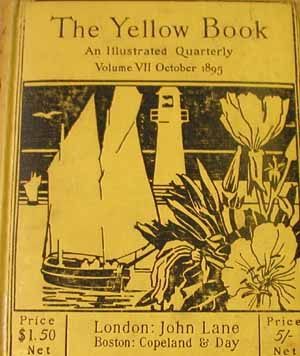
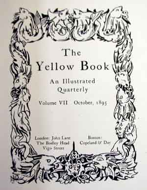
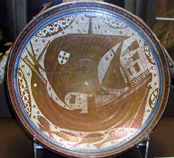

Our page on the history of the Newlyn described the influx of painters to Newlyn, and the setting-up of the Newlyn Industrial Class. On this page we discuss some of the artistic influences on the copper-work produced by the class.
Newlyn copper may at some time have been regarded as a souvenir from Cornwall but is now is recognised as important decorative art, the product of a unique Arts and Crafts venture set up in late Victorian England. Newlyn pieces combine usefulness and beauty in the true tradition of William Morris, and have a great charm particularly as each piece was made by hand.
John Mackenzie

John Mackenzie was an instigator and the artistic director of the Newlyn Industrial Class. Before he arrived at Newlyn in 1888 he had already established himself as a painter and illustrator, exhibiting at the Royal Academy and the Royal Society of British Artists.
The picture to the right is of the front cover of The Yellow Book, 1895 which was an edition illustrated by Newlyn Painters. The Cornish Luggers and Lighthouse in the design are clearly the source of inspiration for many of the Newlyn copper designs (some of which are shown in our Newlyn Illustrations).

Mackenzie's influence on copper designs can also be seen by comparing this frontpiece design to pictures in our illustrations section. The entwined fish in its border are a common motif in the copper designs. This illustration comes from 1895, and Mackenzie's monogram appears in the bottom left-hand corner.
Several pieces of Newlyn copper have inscriptions which attribute the design to Mackenzie and some of the original drawings are still in existence. The front cover of a publication by John Curnow Laity shows a design thought to be by Mackenzie. A painting of Mackenzie instructing a pupil at the Newlyn school , by Stanhope Forbes is included in the Hazel Berriman book on Arts and Crafts in Newlyn. (See reading)
Pearson and De Morgan
Mackenzie was a talented illustrator and designer, and provided much of the energy and organisational ability needed to set up the Newlyn classes, and to ensure that they prospered. It is arguable, however, that John Pearson, who taught at Newlyn, was a more profound artistic influence.

Pearson brought to Newlyn highly developed copper-working skills and techniques, thus establishing copper as the most important medium in which work was produced by the fisherman who attended the Industrial Class. And he brought with him a style and a vocabulary of images developed by William De Morgan. Pearson was powerfully influenced by De Morgan and probably worked for him at his tile works.
The plate on the right of a galleon in full sail is by De Morgan, and clearly shows imagery that was taken up at Newlyn. For example, the design of the De Morgan bowl is very similar to that of many large plaques and chargers made at Newlyn in copper.
Newlyn Fishermen
It would be a mistake to think of the Newlyn fishermen as merely aping the designs of those who inspired them. Newlyn represents one of the most successful experiments within the Arts and Crafts movement. It was outsiders who introduced the Newlyn fishermen to copper-craft and to the basic images that they expressed, but their works can transcend these origins. The best pieces take advantage of the way copper reflects light to suggest a watery surface with a dynamic, three-dimensional aquatic scene below, containing in some cases fantastic sea-creatures or fish rendered with subtle anthropomorphism.
Our illustrations section shows several examples of fine Newlyn copper work.
Spanish Fishermen
De Morgan was influential via Pearson, but it is interesting to consider, in turn, the source of De Morgan's style and images.
De Morgan is known to have been influenced by Moorish (Islamic) Ship Bowls made in medieval Spain. He would have come into contact with these in his frequent visits to the Victoria and Albert Museum. Below is a ceramic dish, in the collection of that museum, which must surely have been an inspiration for his plate shown above.

The illustration shows a ceramic dish from the Victoria and Albert Museum decorated with a fishing boat and a border of stylised fish. This plate is Spanish and dates from 1425 to 1450. It is intriguing to think of De Morgan and Pearson as forming, in effect, a conduit between the sea-fishing cultures of medieval Spain and of turn-of-the-century Cornwall.